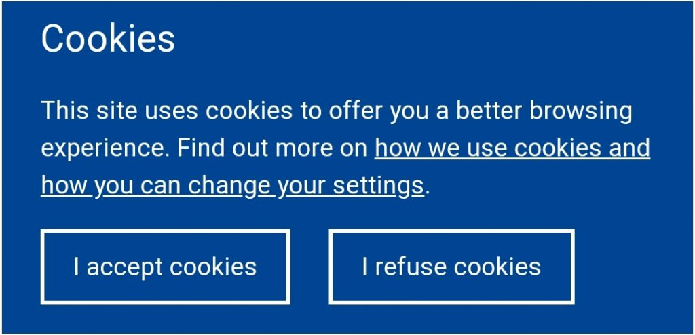

Aarush Mullick 1August,2020 
What are internet cookies? Know everything about HTTP cookies.
You all must have seen heard or seen cookies when you are browsing a website through a web browser. When you visit a website, you must have seen a dialog box appears which tells you to accept the cookies. Now many people just click on accept and then they continue browsing the website. Cookies are small pieces of data in the form of text files which are sent to users’ computer when they are browsing on the web. These cookies have some functions and you all have felt the function of cookies. Example: when you visit an E-Commerce website like Amazon and search for a mobile which you want to buy. Now if you browse something different on that day you see adds on mobile which you were looking for in Amazon. This is done by HTTP cookies.

So, these cookies help you in recommending things which you need. Cookies also have some other functions like remembering login details, tracking your search activity, screen time on a page on the website where users accept the cookies. Cookies are not encrypted. So, you all might think that cookies are good to be used as it helps in browser recommendation and it also loads a website faster that you visit often or frequently. So, these are some of the benefits of cookies but there are also some disadvantages of cookies. Most of the disadvantage is caused by the cookies named third party cookies. So, what are these third-party cookies and how is it different from normal cookies. Well normal cookies (not third-party cookies) are only specific to the website that you visit and accept the cookies terms. For example, if you accept the cookies of Amazon the cookies only work till the time you are browsing the Amazon website whereas third-party cookies can track all your activity on any other website. This may lead to loss of privacy for the users. Third party cookies are mainly stored in your computer by the websites whose advertisements you click on while browsing. This type of cookies can also store login id, passwords or your card details while you make payment on other websites but there is one solution to it.
If you go to your browser and you go to the settings, you will fid two option to block the activities of cookies. One option is BLOCK ALL COOKIES which means your browser will block all the cookies which includes third party cookies and cookies from the trusted websites. But this option may lead to poor recommendation in your browser. The second option is BLOCK THIRD PARTY COOKIES which will block only the third-party cookies coming from website advertisements.
How internet cookies work.
When you click on "accept cookies" the website sends a cookies to your computer with its unique cookie id. Every cookies has it own unique id. When the cookie is sent to the computer it starts its work. Some of its function is to remember tracking id and lot more stuffs. this data is sent to the website owner or website cookie manager who then send you recommendation.
Now you all must be very intrested in knowing how was cookies developed? So, lets answer that too.
History of internet cookies.
Internet cookies were developed by young Internet pioneer Lou Montulli in 1994 when he was creating his Netscape. He got the idea of creating cookies when he was creating online-store for a company whose people said that their servers were getting loaded by customers shopping card data when they were visiting the store. they said to create something which could store data in the users computer. Then he made the cookies from the old magical cookies which remembered user login-id and made many modifications to it. He then expanded this to websites and thus the modern day cookie was born.
If you found it intresting then you can know more on the wikipedia of internet cookies. Share it with everyone.